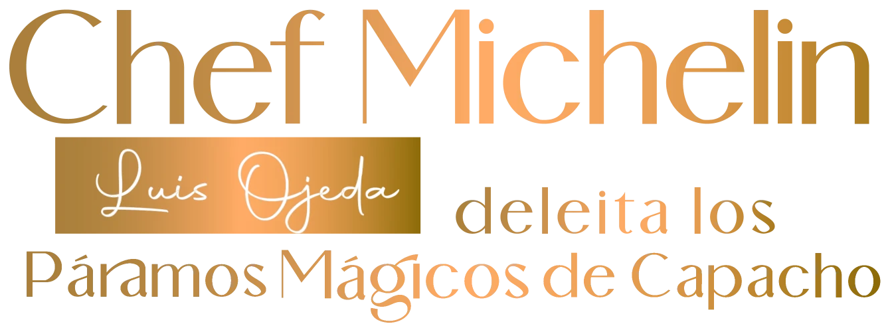
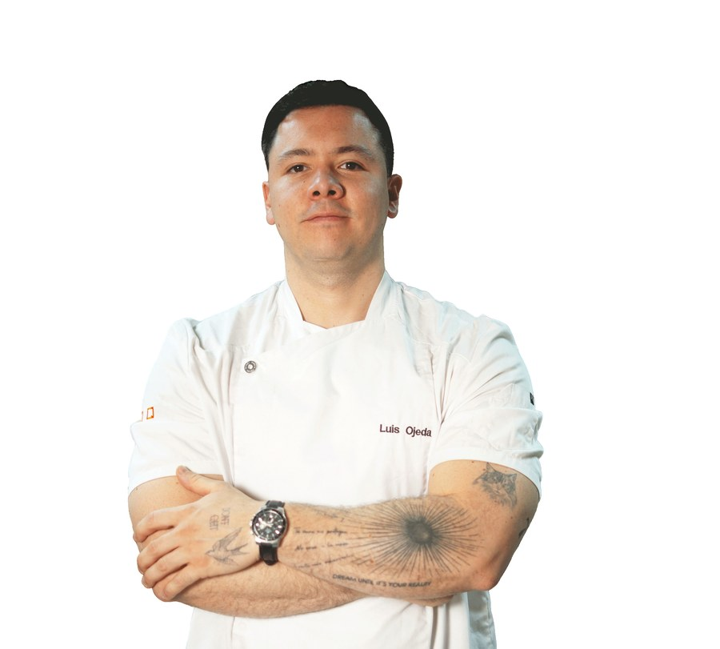

Llega “Chef Michelin Luis Ojeda deleita los Páramos Mágicos de Capacho”, una experiencia que fusiona alta gastronomía, arte, música y potente networking en el majestuoso Jardín Mirador de Aguamiel. Un chef Michelin protagoniza una cena a nueve tiempos acompañada de cultura, virtuosismo en vivo y una atmósfera de lujo incomparable. Un evento creado para redefinir la hospitalidad sensorial y posicionar al Táchira como referencia de sofisticación y excelencia en Venezuela.


Parte del equipo ganador de la estrella Michelin en el restaurante Benares Londres y Chef Ejecutivo de Benares Madrid, el único restaurante de alta cocina india reconocido por la Guía Michelin en toda la península ibérica.